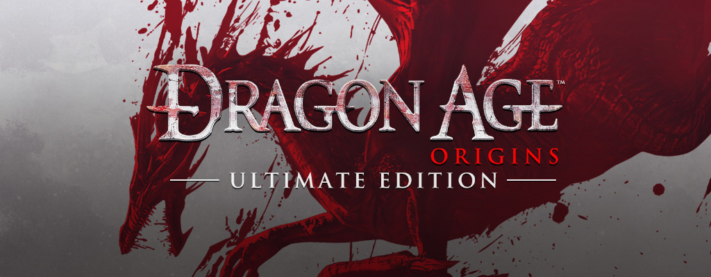
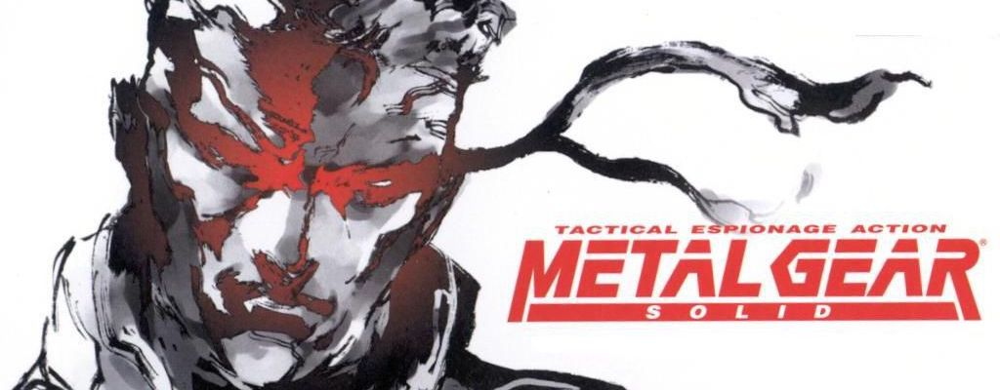
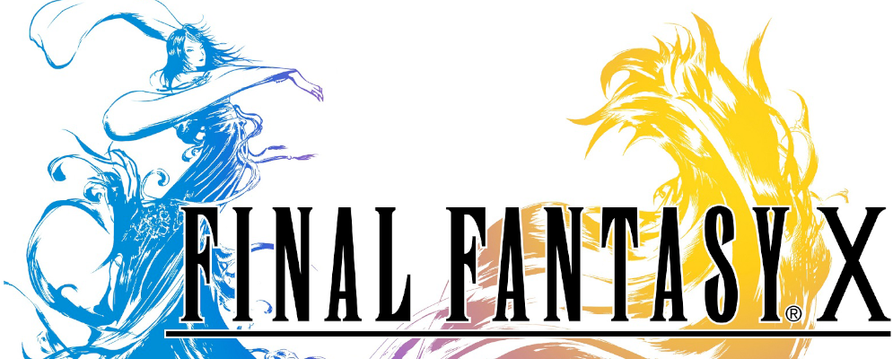
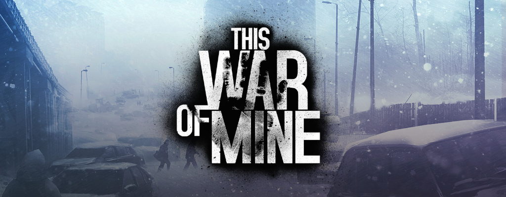
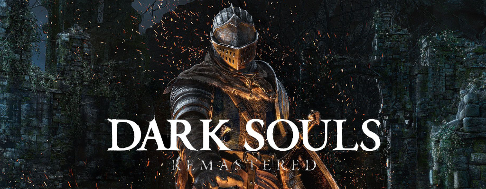

Dragon Age: Origins, Bioware - 2009
"Dragon Age: Origins" is probably my favorite videogame ever thus far. It is not, without a doubt, "the
best game ever" nor anything like that, but more a videogame that I myself have personally deeply aprecciated.
Dragon Age: Origins brings the player in an incredible well-constructed medieval fantasy world, with an
extremely expanded lore and an intricated story of the world itself, which creates a really realistic setting,
which makes the world feels alive; the player doesn't move in a set world where everything is immutable, but
rather in a world in continuos changing where the protagonist itself is not the more important figure in the
world, but even at the end of a story is "one of the many important man/woman in history".
This incredible setting is matched by one of the best possibility of role-play gaming in videogames: the player
can create a character with many possible backgrounds which influences the progress of the story, and there are
so many dialogue options and side-quests that almost every role-play is possible (I had problems only with some
extremely precise and exaggereted role-plays) and thus makes ever run unique.
The OSTs are quite simple but good, and the gameplay is honestly quite mechanical (and not in a good way),
which makes the game quite difficult to approach at first. But even so, once you get used to it, you can fully
appreciate every battle and start to love to play.
Also, the two sequels (Dragon Age 2 and Dragon Age: Inquisition) made the game feels much more
like "the story of a world" and not "the story of a single protaognist", and made clear many details of the
first game that were easy to leave unnoticed: thus shows how many things there are in Dragon Age: Origins.
Even I, that have never looked for any guide in internet and having played the game 10 times, still discover
new things at every run.


Metal Gear Solid Saga, Konami - 1998-2015
The "Metal Gear Solid" Saga ("Solid" because I won't take in consideration the first two videogames) is in my opinion one of the best Sagas of videogames' history, even if many disagrees. Why? Because many say that a videogame with so many cutscenes (Metal Gear Solid 4 as a total of 8 hours of cutscenes on a total of roughly 20 hours of videogame) should not be counted as an actual videogame.
Even so, cutscenes aside, the Metal Gear Solid videogames has many incredible technical details; for example, in Metal Gear Solid 2: Sons of Liberty (2001) when the player shoots at a glass, it breakes differently depending on where it has been hitted and with a different sound depending also by the dimension of the glass, and the physical engine makes the fragments of the glass fall depending on how it has been broken. Also, in all the Metal Gear Solids there are incredible ideas of boss fight, like the way to defeat Psycho Mantis in Metal Gear Solid 1 or the alternative way of beating The End in Metal Gear Solid 3: Snake Eater.
Taking in consideration the cutscenes, Metal Gear Solid's story is incredibly well-done and full of so many details that is incredibly hard to remember everything that has been said in every cutscenes and "codec dialogues".
Playing (or even watching through a playthrough) the Metal Gear Solid Saga is an incredible experience, full of emotions. It is without a doubt a videogame saga that I recommend to everyone.
The "Metal Gear Solid" Saga ("Solid" because I won't take in consideration the first two videogames) is in my opinion one of the best Sagas of videogames' history, even if many disagrees. Why? Because many say that a videogame with so many cutscenes (Metal Gear Solid 4 as a total of 8 hours of cutscenes on a total of roughly 20 hours of videogame) should not be counted as an actual videogame.
Even so, cutscenes aside, the Metal Gear Solid videogames has many incredible technical details; for example, in Metal Gear Solid 2: Sons of Liberty (2001) when the player shoots at a glass, it breakes differently depending on where it has been hitted and with a different sound depending also by the dimension of the glass, and the physical engine makes the fragments of the glass fall depending on how it has been broken. Also, in all the Metal Gear Solids there are incredible ideas of boss fight, like the way to defeat Psycho Mantis in Metal Gear Solid 1 or the alternative way of beating The End in Metal Gear Solid 3: Snake Eater.
Taking in consideration the cutscenes, Metal Gear Solid's story is incredibly well-done and full of so many details that is incredibly hard to remember everything that has been said in every cutscenes and "codec dialogues".
Playing (or even watching through a playthrough) the Metal Gear Solid Saga is an incredible experience, full of emotions. It is without a doubt a videogame saga that I recommend to everyone.

Final Fantasy X, Square Enix - 2002
"FInal Fantasy X" è un GDR Fantasy creato dalla Square Soft (ora Square Enix) nel 2001 in Giappone e Stati Uniti e nel 2002 in Europa. Final Fantasy X è il decimo capitolo della saga di Final Fantasy, ed è il primo per Playstation 2, nonché il primo ad avere un doppiaggio dei personaggi ed un sequel diretto, "Final Fantasy X-2".
Il Gameplay del gioco differisce molto dai precedenti capitoli, già per il fatto che viene ripreso il sistema di battaglia a turni dei primi capitoli sostituendo l'Active Time Battle. Questo sistema di combattimento a turni, denominato "Conditional Turn-Based Battle", è però diverso da quello dei primi capitoli (o anche da giochi tipo Pokémon) in quanto non si sceglie l'azione di tutti i personaggi e poi comincia ad attaccare il più veloce, ma bensì si sceglie le azioni dei personaggi uno alla volta e dopo ogni scelta esso attacca, ed è possibile vedere l'ordine dei turni in alto a destra dello schermo. Un'altra differenza sostanziosa del gioco è il sistema di sviluppo dei personaggi, che non utilizza un sistema a livelli, ma bensì la Sferografia. Ci sono due tipi di Sferografia (si decide quale usare a inizio gioco); la Standard e la Master. In entrambi i casi i personaggi guadagnano punti esperienza in battaglia e ad ogni "level up" ottengono un punto, che permettere di spostarsi di una casella nella Sferografia, ottenendo così bonus vari a dipendenza della direzione di movimento (come ad esempio più Punti Vita, nuove magie, più velocità, ecc.). La differenza tra le due è che nella Sferografia Standard i personaggi sono distanti tra loro sulla Sferografia e ognuno segue un percorso quasi totalmente predefinito che porta a potenziare i vari personaggi nel modo più adatto (ad esempio un personaggio che non usa magie continuerà a non usare magie e potenzierà i suoi punti vita e la sua potenza fisica), mentre nella Sferografia Master tutti i personaggi iniziano al centro di essa e non ci sono percorsi predefiniti, così che il giocatore possa potenziare i vari personaggi a suo piacimento. Un sistema di sviluppo immenso come la Sferografia permette di superare i limiti di 9999 Punti Vita e 9999 Punti Vita di danno infliggibile che vi erano in tutti i precedenti Final Fantasy, permettendo di raggiungere i 99'999 Punti Vita ed i 99'999 Punti Vita di danno infliggibile.
Andiamo ora alla storia del gioco (che ho preso da wikipedia e a cui ho aggiunto qualcosa in quanto non saprei come spiegarla in poche righe):
Quando la gigantesca metropoli di Zanarkand viene distrutta da una malvagia entità di nome Sin,Tidus, giovane campione di Blitzball (una specie di calcio-rugby che si gioca sott'acqua), si ritrova trasportato in un altro mondo. Scoprirà di trovarsi su Spira, mille anni dopo la fine di Zanarkand. È un mondo pieno di misteri e contraddizioni, i cui abitanti vivono nel terrore di Sin, che semina morte e distruzione. Qui Tidus incontra Yuna, figlia di lord Braska, l'invocatore che sconfisse Sin dieci anni prima, ed invocatrice a sua volta. Sin può infatti essere sconfitto, ma rinasce ogni volta. Tutto ciò che possono fare gli invocatori è portare un breve periodo di calma, detto "Bonacciale". Tidus si unisce a Yuna e ai suoi guardiani Lulu, Wakka e Kimahri in un pellegrinaggio alla ricerca dell'invocazione suprema. Solo grazie a quest'ultima è possibile sconfiggere Sin e riportare la pace su Spira. Durante il pellegrinaggio si uniscono al gruppo Rikku, una vivace ragazza albhed, e Auron, il leggendario guardiano che sconfisse Sin insieme a Braska e al padre di Tidus, Jecht. Nel corso del suo viaggio, però, Tidus scoprirà che la realtà su Spira è molto più crudele di quanto non sembri. Il gioco si divide dunque in "3 storie", una è il pellegrinaggio che porta il gruppo ad ottenere l'invocazione suprema per sconfiggere Sin, un'altra è la battaglia contro Seymour, che vuole controllare Sin per portare la morte su tutta Spira (in quanto, come dice lui, "La vita è un sogno sfuggevole, ma la morte è eterna"), e l'ultima è una storia d'amore che si sviluppa nel corso del gioco tra Tidus e Yuna. Senza fare spoiler, vorrei concludere il paragrafo della storia con una mia opinione personale, ovvero che a parer mio questo è il miglior gioco della saga e vanta uno dei migliori finali in assoluto (peccato poi per il sequel...).
-Taken from a post of mine in "Anime/GDR Club!", that you can find here.
"FInal Fantasy X" è un GDR Fantasy creato dalla Square Soft (ora Square Enix) nel 2001 in Giappone e Stati Uniti e nel 2002 in Europa. Final Fantasy X è il decimo capitolo della saga di Final Fantasy, ed è il primo per Playstation 2, nonché il primo ad avere un doppiaggio dei personaggi ed un sequel diretto, "Final Fantasy X-2".
Il Gameplay del gioco differisce molto dai precedenti capitoli, già per il fatto che viene ripreso il sistema di battaglia a turni dei primi capitoli sostituendo l'Active Time Battle. Questo sistema di combattimento a turni, denominato "Conditional Turn-Based Battle", è però diverso da quello dei primi capitoli (o anche da giochi tipo Pokémon) in quanto non si sceglie l'azione di tutti i personaggi e poi comincia ad attaccare il più veloce, ma bensì si sceglie le azioni dei personaggi uno alla volta e dopo ogni scelta esso attacca, ed è possibile vedere l'ordine dei turni in alto a destra dello schermo. Un'altra differenza sostanziosa del gioco è il sistema di sviluppo dei personaggi, che non utilizza un sistema a livelli, ma bensì la Sferografia. Ci sono due tipi di Sferografia (si decide quale usare a inizio gioco); la Standard e la Master. In entrambi i casi i personaggi guadagnano punti esperienza in battaglia e ad ogni "level up" ottengono un punto, che permettere di spostarsi di una casella nella Sferografia, ottenendo così bonus vari a dipendenza della direzione di movimento (come ad esempio più Punti Vita, nuove magie, più velocità, ecc.). La differenza tra le due è che nella Sferografia Standard i personaggi sono distanti tra loro sulla Sferografia e ognuno segue un percorso quasi totalmente predefinito che porta a potenziare i vari personaggi nel modo più adatto (ad esempio un personaggio che non usa magie continuerà a non usare magie e potenzierà i suoi punti vita e la sua potenza fisica), mentre nella Sferografia Master tutti i personaggi iniziano al centro di essa e non ci sono percorsi predefiniti, così che il giocatore possa potenziare i vari personaggi a suo piacimento. Un sistema di sviluppo immenso come la Sferografia permette di superare i limiti di 9999 Punti Vita e 9999 Punti Vita di danno infliggibile che vi erano in tutti i precedenti Final Fantasy, permettendo di raggiungere i 99'999 Punti Vita ed i 99'999 Punti Vita di danno infliggibile.
Andiamo ora alla storia del gioco (che ho preso da wikipedia e a cui ho aggiunto qualcosa in quanto non saprei come spiegarla in poche righe):
Quando la gigantesca metropoli di Zanarkand viene distrutta da una malvagia entità di nome Sin,Tidus, giovane campione di Blitzball (una specie di calcio-rugby che si gioca sott'acqua), si ritrova trasportato in un altro mondo. Scoprirà di trovarsi su Spira, mille anni dopo la fine di Zanarkand. È un mondo pieno di misteri e contraddizioni, i cui abitanti vivono nel terrore di Sin, che semina morte e distruzione. Qui Tidus incontra Yuna, figlia di lord Braska, l'invocatore che sconfisse Sin dieci anni prima, ed invocatrice a sua volta. Sin può infatti essere sconfitto, ma rinasce ogni volta. Tutto ciò che possono fare gli invocatori è portare un breve periodo di calma, detto "Bonacciale". Tidus si unisce a Yuna e ai suoi guardiani Lulu, Wakka e Kimahri in un pellegrinaggio alla ricerca dell'invocazione suprema. Solo grazie a quest'ultima è possibile sconfiggere Sin e riportare la pace su Spira. Durante il pellegrinaggio si uniscono al gruppo Rikku, una vivace ragazza albhed, e Auron, il leggendario guardiano che sconfisse Sin insieme a Braska e al padre di Tidus, Jecht. Nel corso del suo viaggio, però, Tidus scoprirà che la realtà su Spira è molto più crudele di quanto non sembri. Il gioco si divide dunque in "3 storie", una è il pellegrinaggio che porta il gruppo ad ottenere l'invocazione suprema per sconfiggere Sin, un'altra è la battaglia contro Seymour, che vuole controllare Sin per portare la morte su tutta Spira (in quanto, come dice lui, "La vita è un sogno sfuggevole, ma la morte è eterna"), e l'ultima è una storia d'amore che si sviluppa nel corso del gioco tra Tidus e Yuna. Senza fare spoiler, vorrei concludere il paragrafo della storia con una mia opinione personale, ovvero che a parer mio questo è il miglior gioco della saga e vanta uno dei migliori finali in assoluto (peccato poi per il sequel...).
-Taken from a post of mine in "Anime/GDR Club!", that you can find here.

This War of Mine, 11 bit Studios - 2014
"This War of Mine" is a videogame set in a besieged city, and for once the players are not some kind of soldier who has to fight but a group of civilians who has to survive in every way they can until the ceasefire... without knowing when it will come. During daytime there are snipers that prevent the survivor to go outside, so the player can tell them to craft object and improving their shelter, while during nighttime they can go outside to look for resources.
Every character of the group guided by the player has a mental and physical bar and every action will affect them: stealing, being in bad shape or the death of a friend will decrease their psyche, while smoking, eating and finding resources will increase it. If a character gets wounded or doesn't it for too much time, his physical bar will decrease until he'll die or will be unable to move (which will also decrease his psyche).
When a character explore, he might find random events, like a girl that is going to be raped or killed by a soldier; if you make the character intervene, he will probably die (especially if he doesn't have a weapon), but if you don't his psyche will greatly decrease because he has seen something bad and blame himself for being unable to save the girl. As another example, if a character steals from someone helpless people, his psyche will also decrease because he will feel like becoming a monster that condamned another person to death who has no power to find other food alone.
But what will happend if the psyche bar is too low? The character will suicide and the player won't be able to do anything to save it. Also, some chracters might also be wounded or die during the assault of armed people at the shelter.
It is not over yet: at a certain random point, it will also arrive winter: it might be an easy winter... or an incredible tense one, really long and whith temperature so low that the caracters might also get sicked or die for the absence of material to burn for heating the shelter.
Considering all of the above, and considering that the resources are finite, it might be quite hard to survive until the end if not impossible; even if you dose perfectly all the resources, it might be impossible to reach the end if the ceasefire will come too late or never come.
The objective of this game is in fact the one to recreate the conditions of a besieged city during war (insipired by the The Siege of Sarajevo), and it is incredibly well done: the feeling that the player has is really the one of a survivor that will never know when his suffering will end and if it is possible to survive until the ceasefire. Exactly like in real life, it might also be impossible to survive, and even if it is, the psychological burden might be unbearable.
"This War of Mine" is a videogame set in a besieged city, and for once the players are not some kind of soldier who has to fight but a group of civilians who has to survive in every way they can until the ceasefire... without knowing when it will come. During daytime there are snipers that prevent the survivor to go outside, so the player can tell them to craft object and improving their shelter, while during nighttime they can go outside to look for resources.
Every character of the group guided by the player has a mental and physical bar and every action will affect them: stealing, being in bad shape or the death of a friend will decrease their psyche, while smoking, eating and finding resources will increase it. If a character gets wounded or doesn't it for too much time, his physical bar will decrease until he'll die or will be unable to move (which will also decrease his psyche).
When a character explore, he might find random events, like a girl that is going to be raped or killed by a soldier; if you make the character intervene, he will probably die (especially if he doesn't have a weapon), but if you don't his psyche will greatly decrease because he has seen something bad and blame himself for being unable to save the girl. As another example, if a character steals from someone helpless people, his psyche will also decrease because he will feel like becoming a monster that condamned another person to death who has no power to find other food alone.
But what will happend if the psyche bar is too low? The character will suicide and the player won't be able to do anything to save it. Also, some chracters might also be wounded or die during the assault of armed people at the shelter.
It is not over yet: at a certain random point, it will also arrive winter: it might be an easy winter... or an incredible tense one, really long and whith temperature so low that the caracters might also get sicked or die for the absence of material to burn for heating the shelter.
Considering all of the above, and considering that the resources are finite, it might be quite hard to survive until the end if not impossible; even if you dose perfectly all the resources, it might be impossible to reach the end if the ceasefire will come too late or never come.
The objective of this game is in fact the one to recreate the conditions of a besieged city during war (insipired by the The Siege of Sarajevo), and it is incredibly well done: the feeling that the player has is really the one of a survivor that will never know when his suffering will end and if it is possible to survive until the ceasefire. Exactly like in real life, it might also be impossible to survive, and even if it is, the psychological burden might be unbearable.

Dark Souls, FromSoftware - 2011
"Dark Souls" è un videogioco del 2011 Action Dark Fantasy, ed in parte anche strategico, creato dalla From Software e di cui è stato fatto un seguito, "Dark Souls II", a Marzo 2014.
Dark Souls è conosciuto per la sua alta difficoltà, ma non è totalmente vero che è così difficile; ciò che rende particolare questo gioco è che ogni nemico può ucciderti se non presti sufficiente attenzione ed inoltre i nemici cercheranno continuamente di portarti in trappola, farti imboscate o attacchi a tenaglia e sfrutteranno il terreno di battaglia a loro favore. Ciò che rende dunque "difficile" Dark Souls è il fatto che durante il combattimento non devi solo attaccare, difenderti e schivare, ma anche analizzare il campo di battaglia ed i movimenti e gli attacchi dei tuoi avversari affinché essi non ti possano soverchiare con attacchi inaspettati. L'elemento però che porta a considerare il gioco difficile è il fatto che è estremamente punitivo; ovvero ogni errore, come ad esempio sbagliare il tempismo di un attacco o di una schivata, porterà con grandi probabilità alla morte. Ci sono altri due elementi che rendono il gioco "difficile", che sono il fatto di non poter mettere in pausa il gioco (ovvero una volta cominciato a giocare il tempo nel gioco continua a scorrere, anche aprendo il menù per cambiare equipaggiamento o per cambiare le impostazioni, e continuerà a farlo finché non si uscirà dal gioco) ed il fatto che il mondo di gioco è molto vasto (ed interconnesso. punto forte di Dark Souls) e non ci sono mappe e nessuno ti dice dove devi andare (eccetto alcune piccole indicazioni quasi inutili); ciò rende tutto molto complesso visto che quasi tutto il mondo di gioco è accessibile fin dall'inizio e dal punto di partenza ci sono già diverse vie che vanno in direzioni differenti.
Andiamo ora ai fatti; a cosa serve un così alto tasso di morti? Come vedremo più avanti, in Dark Souls nulla è messo a caso, così come non lo è il fatto di morire; morire fa infatti parte del gioco e alla morte non si ritorna al "checkpoint" perdendo tutto quello che si ha fatto da quel luogo fino alla morte, ma bensì tutto viene mantenuto in quanto il fatto di morire è collegato alla storia del gioco. "Significa dunque che è obbligatorio morire?" Assolutamente no. Ciò che rende Dark Souls un gioco diverso da molti altri è il fatto che non importa quanto fai salire di livello il personaggio; ciò che importa sono l'abilità del giocatore, la sua strategia, la reattività in battaglia e, in parte, anche l'esperienza. Nel gioco infatti non si sale di livello automaticamente, ma si spendono anime (ovvero i "soldi" del gioco), ottenute tramite l'uccisione di nemici, per farlo. Ciò significa che si può decidere di non salire di livello e nonostante ciò finire il gioco; esso è infatti finibile anche senza vestiti, a mani nude e a livello 1 se si è sufficientemente bravi, così come se si è dei "nabbi" si potrebbe addirittura non riuscire a finirlo ad alti livelli e con un ottimo equipaggiamento. Ma torniamo alla domanda iniziale: a cosa servono tutte queste morti? Come si vedrà più avanti, uno dei fili conduttori di Dark Souls è la tristezza, la sofferenza, e il morire spesso serve a far personificare meglio il giocatore nel suo personaggio all'interno di questo mondo oscuro e triste, e, come è stato detto in un'intervista, il gioco "Rivela che la vita è più sofferenza che piacere, più fallimenti che successi, ma non ti devi arrendere, non importa quante volte dovrai riprovare; è come un test alla tua persistenza."
Andiamo ora a guardare la storia del gioco, uno dei punti maggiori di forza del gioco, e per farlo vi invito a guardare l'intro del gioco che potete trovare su youtube. Dopo questa intro c'è soltanto un altro filmato dopo il tutorial dove viene detto: "Yes, Indeed. The Darksing brands the Undead. And in this land, the Undead are corralled and led to the north, where they are locked away, to await the end of the world… This is your fate. Only, in the ancient legends it is stated, that one day an undead shall be chosen to leave the undead asylum, in pilgrimage, to the land of ancient lord, Lordran." Questi due sono gli unici filmati del gioco (eccetto qualche scenetta di presentazione di alcuni boss) oltre al finale e, insieme ad altri due personaggi nel gioco (uno dei quali si può scoprire che probabilmente non dice la verità, mentre dell'altro non se ne ha la certezza) sono le uniche fonti chiare sulla storia del gioco e del mondo di Dark Souls. Pertanto già a inizio gioco non si sa cosa bisogna fare. Come si fa dunque a conoscere bene la storia di Dark Souls? All'interno del gioco ci sono tantissimi oggetti trovabili e la loro descrizione racconta un pezzettino minuscolo della storia, per cui bisogna leggere la descrizione di tutti gli oggetti e mettere insieme i frammenti per comprendere QUASI tutto (infatti diverse cose sono ignote e spetta al giocatore comprenderle). Così facendo è possibile scoprire che persino l'intro è incompleta e gli eventi che narra si fermano a più di 1000 anni prima dell'inizio del gioco. La Lore, come viene chiamata, di Dark Souls è ampissima e tramite gli oggetti si può scoprire dunque nei dettaglia la storia di tutti i luoghi e di tutti i nemici e si può comprendere dunque che nessun boss ti attacca a caso; ha un motivo per attaccarti e per trovarsi in quel luogo, così come ogni oggetto ha un motivo ben preciso per trovarsi nel luogo in cui lo si trova. Come detto prima, infatti, in Dark Souls NULLA è messo a caso, tutto ha un senso, per quanto a volte sia difficile comprenderlo. Tramite questi oggetti si può infatti scoprire come quasi tutti in Dark Souls abbiano un passato triste e doloroso e come alcuni boss ti attacchino addirittura contro la loro volontà, perché sono costretti a farlo ad esempio per una maledizione che li lega, e costoro non aspettano altro che qualcuno ponga fine alle loro sofferenze. Un importante appunto prima di lasciarci alle spalle la Lore; il motivo per il quale ho messo l'intro anche in inglese e la parte dopo il tutorial solo in inglese, è per il fatto che Dark Souls è un gioco che è meglio giocare in inglese in quanto in italiano vi sono diversi errori di traduzioni (come in realtà ce ne sono già nella traduzione dal giapponese all'inglese), alcuni piuttosto importanti, e ciò influisce moltissimo in un gioco dove si specula su ogni singola parola di descrizione degli oggetti per capire tutta la storia.
Andiamo ora a vedere altri due punti forti del gioco, ovvero quelli a cui la Frow Software ha dato maggiore importanza; ovvero i design e le OST (che nel seguito sono state amplificate moltissimo a livello di effetto, ma non è ora il momento di parlare di Dark Souls II).
Le OST sono molto semplici ma sono state composte ed inserite con una grande attenzione in modo che, anche se non si fa caso ad esse giocando, influiscano sul giocatore portandolo ad essere teso o rilassato a dipendenza del luogo e della situazione in cui si trova.
I design invece sono curati nei minimi dettagli e, ad esempio nel caso dei nemici, sono fatti in modo da dare una "personalità"; infatti i nemici non sono creature mostruose, ma bensì sono ben pensate. Ad esempio se una creature un tempo maestosa è stata corrotta e trasformata in un obrorio, essa non apparirà come un mostro orrendo che "fa schifo", ma bensì si vedranno gli echi della sua maestosità di un tempo ed ogni minimo segno della corruzione.
Uscì poi un DLC di questo gioco, intitolato "Artorias of the Abyss", nel quale si fa un viaggio nel passato (all'incirca tra i 400 e gli 800 anni prima dell'inizio del gioco) e dove vengono approfondite le storie dei 4 principali cavalieri di Gwyn e degli umani. Infatti i vari Lord e i loro discepoli non sono umani; probabilmente gli umani sono stati creati dal Nano Furtivo, che aveva con sé non un'anima qualsiasi ma bensì la "tanto citata" anima oscura. Le anime che ottieni dai mostri, dai demoni e dai giganti sono infatti bianche e pure, mentre le umanità sono nere. Ciò indica dunque che in Dark Souls l'umanità non viene dalle prime fiamme, ma bensì dall'Abisso; dall'oscurità.
A Lordran, la terra degli Lord, gli umani vengono infatti visti come creature oscure e di conseguenza anche le emozioni umane lo sono; in Dark Souls infatti l'amore è visto come la più oscura emozioni, in quanto tipicamente umana e che può portare a dolore, guerra ed altre cose negative e pertanto, come si vedrà in particolare in Dark Souls II, è considerato proibito.
Vi è inoltre una modalità online che, solo durante specifici "momenti del gioco", permette di poter chiamare altri giocatori per farsi aiutare in dei punti del gioco particolarmente ostici. Ma in questi momenti qualunque altro giocatore potrà invadere il tuo mondo di gioco e cercare di ucciderti, il che gli risulterà particolarmente facile dato che i mostri del gioco attaccheranno solo l'invaso e non anche l'invasore.
-Taken from a post of mine in "Anime/GDR Club!", that you can find here.
"Dark Souls" è un videogioco del 2011 Action Dark Fantasy, ed in parte anche strategico, creato dalla From Software e di cui è stato fatto un seguito, "Dark Souls II", a Marzo 2014.
Dark Souls è conosciuto per la sua alta difficoltà, ma non è totalmente vero che è così difficile; ciò che rende particolare questo gioco è che ogni nemico può ucciderti se non presti sufficiente attenzione ed inoltre i nemici cercheranno continuamente di portarti in trappola, farti imboscate o attacchi a tenaglia e sfrutteranno il terreno di battaglia a loro favore. Ciò che rende dunque "difficile" Dark Souls è il fatto che durante il combattimento non devi solo attaccare, difenderti e schivare, ma anche analizzare il campo di battaglia ed i movimenti e gli attacchi dei tuoi avversari affinché essi non ti possano soverchiare con attacchi inaspettati. L'elemento però che porta a considerare il gioco difficile è il fatto che è estremamente punitivo; ovvero ogni errore, come ad esempio sbagliare il tempismo di un attacco o di una schivata, porterà con grandi probabilità alla morte. Ci sono altri due elementi che rendono il gioco "difficile", che sono il fatto di non poter mettere in pausa il gioco (ovvero una volta cominciato a giocare il tempo nel gioco continua a scorrere, anche aprendo il menù per cambiare equipaggiamento o per cambiare le impostazioni, e continuerà a farlo finché non si uscirà dal gioco) ed il fatto che il mondo di gioco è molto vasto (ed interconnesso. punto forte di Dark Souls) e non ci sono mappe e nessuno ti dice dove devi andare (eccetto alcune piccole indicazioni quasi inutili); ciò rende tutto molto complesso visto che quasi tutto il mondo di gioco è accessibile fin dall'inizio e dal punto di partenza ci sono già diverse vie che vanno in direzioni differenti.
Andiamo ora ai fatti; a cosa serve un così alto tasso di morti? Come vedremo più avanti, in Dark Souls nulla è messo a caso, così come non lo è il fatto di morire; morire fa infatti parte del gioco e alla morte non si ritorna al "checkpoint" perdendo tutto quello che si ha fatto da quel luogo fino alla morte, ma bensì tutto viene mantenuto in quanto il fatto di morire è collegato alla storia del gioco. "Significa dunque che è obbligatorio morire?" Assolutamente no. Ciò che rende Dark Souls un gioco diverso da molti altri è il fatto che non importa quanto fai salire di livello il personaggio; ciò che importa sono l'abilità del giocatore, la sua strategia, la reattività in battaglia e, in parte, anche l'esperienza. Nel gioco infatti non si sale di livello automaticamente, ma si spendono anime (ovvero i "soldi" del gioco), ottenute tramite l'uccisione di nemici, per farlo. Ciò significa che si può decidere di non salire di livello e nonostante ciò finire il gioco; esso è infatti finibile anche senza vestiti, a mani nude e a livello 1 se si è sufficientemente bravi, così come se si è dei "nabbi" si potrebbe addirittura non riuscire a finirlo ad alti livelli e con un ottimo equipaggiamento. Ma torniamo alla domanda iniziale: a cosa servono tutte queste morti? Come si vedrà più avanti, uno dei fili conduttori di Dark Souls è la tristezza, la sofferenza, e il morire spesso serve a far personificare meglio il giocatore nel suo personaggio all'interno di questo mondo oscuro e triste, e, come è stato detto in un'intervista, il gioco "Rivela che la vita è più sofferenza che piacere, più fallimenti che successi, ma non ti devi arrendere, non importa quante volte dovrai riprovare; è come un test alla tua persistenza."
Andiamo ora a guardare la storia del gioco, uno dei punti maggiori di forza del gioco, e per farlo vi invito a guardare l'intro del gioco che potete trovare su youtube. Dopo questa intro c'è soltanto un altro filmato dopo il tutorial dove viene detto: "Yes, Indeed. The Darksing brands the Undead. And in this land, the Undead are corralled and led to the north, where they are locked away, to await the end of the world… This is your fate. Only, in the ancient legends it is stated, that one day an undead shall be chosen to leave the undead asylum, in pilgrimage, to the land of ancient lord, Lordran." Questi due sono gli unici filmati del gioco (eccetto qualche scenetta di presentazione di alcuni boss) oltre al finale e, insieme ad altri due personaggi nel gioco (uno dei quali si può scoprire che probabilmente non dice la verità, mentre dell'altro non se ne ha la certezza) sono le uniche fonti chiare sulla storia del gioco e del mondo di Dark Souls. Pertanto già a inizio gioco non si sa cosa bisogna fare. Come si fa dunque a conoscere bene la storia di Dark Souls? All'interno del gioco ci sono tantissimi oggetti trovabili e la loro descrizione racconta un pezzettino minuscolo della storia, per cui bisogna leggere la descrizione di tutti gli oggetti e mettere insieme i frammenti per comprendere QUASI tutto (infatti diverse cose sono ignote e spetta al giocatore comprenderle). Così facendo è possibile scoprire che persino l'intro è incompleta e gli eventi che narra si fermano a più di 1000 anni prima dell'inizio del gioco. La Lore, come viene chiamata, di Dark Souls è ampissima e tramite gli oggetti si può scoprire dunque nei dettaglia la storia di tutti i luoghi e di tutti i nemici e si può comprendere dunque che nessun boss ti attacca a caso; ha un motivo per attaccarti e per trovarsi in quel luogo, così come ogni oggetto ha un motivo ben preciso per trovarsi nel luogo in cui lo si trova. Come detto prima, infatti, in Dark Souls NULLA è messo a caso, tutto ha un senso, per quanto a volte sia difficile comprenderlo. Tramite questi oggetti si può infatti scoprire come quasi tutti in Dark Souls abbiano un passato triste e doloroso e come alcuni boss ti attacchino addirittura contro la loro volontà, perché sono costretti a farlo ad esempio per una maledizione che li lega, e costoro non aspettano altro che qualcuno ponga fine alle loro sofferenze. Un importante appunto prima di lasciarci alle spalle la Lore; il motivo per il quale ho messo l'intro anche in inglese e la parte dopo il tutorial solo in inglese, è per il fatto che Dark Souls è un gioco che è meglio giocare in inglese in quanto in italiano vi sono diversi errori di traduzioni (come in realtà ce ne sono già nella traduzione dal giapponese all'inglese), alcuni piuttosto importanti, e ciò influisce moltissimo in un gioco dove si specula su ogni singola parola di descrizione degli oggetti per capire tutta la storia.
Andiamo ora a vedere altri due punti forti del gioco, ovvero quelli a cui la Frow Software ha dato maggiore importanza; ovvero i design e le OST (che nel seguito sono state amplificate moltissimo a livello di effetto, ma non è ora il momento di parlare di Dark Souls II).
Le OST sono molto semplici ma sono state composte ed inserite con una grande attenzione in modo che, anche se non si fa caso ad esse giocando, influiscano sul giocatore portandolo ad essere teso o rilassato a dipendenza del luogo e della situazione in cui si trova.
I design invece sono curati nei minimi dettagli e, ad esempio nel caso dei nemici, sono fatti in modo da dare una "personalità"; infatti i nemici non sono creature mostruose, ma bensì sono ben pensate. Ad esempio se una creature un tempo maestosa è stata corrotta e trasformata in un obrorio, essa non apparirà come un mostro orrendo che "fa schifo", ma bensì si vedranno gli echi della sua maestosità di un tempo ed ogni minimo segno della corruzione.
Uscì poi un DLC di questo gioco, intitolato "Artorias of the Abyss", nel quale si fa un viaggio nel passato (all'incirca tra i 400 e gli 800 anni prima dell'inizio del gioco) e dove vengono approfondite le storie dei 4 principali cavalieri di Gwyn e degli umani. Infatti i vari Lord e i loro discepoli non sono umani; probabilmente gli umani sono stati creati dal Nano Furtivo, che aveva con sé non un'anima qualsiasi ma bensì la "tanto citata" anima oscura. Le anime che ottieni dai mostri, dai demoni e dai giganti sono infatti bianche e pure, mentre le umanità sono nere. Ciò indica dunque che in Dark Souls l'umanità non viene dalle prime fiamme, ma bensì dall'Abisso; dall'oscurità.
A Lordran, la terra degli Lord, gli umani vengono infatti visti come creature oscure e di conseguenza anche le emozioni umane lo sono; in Dark Souls infatti l'amore è visto come la più oscura emozioni, in quanto tipicamente umana e che può portare a dolore, guerra ed altre cose negative e pertanto, come si vedrà in particolare in Dark Souls II, è considerato proibito.
Vi è inoltre una modalità online che, solo durante specifici "momenti del gioco", permette di poter chiamare altri giocatori per farsi aiutare in dei punti del gioco particolarmente ostici. Ma in questi momenti qualunque altro giocatore potrà invadere il tuo mondo di gioco e cercare di ucciderti, il che gli risulterà particolarmente facile dato che i mostri del gioco attaccheranno solo l'invaso e non anche l'invasore.
-Taken from a post of mine in "Anime/GDR Club!", that you can find here.